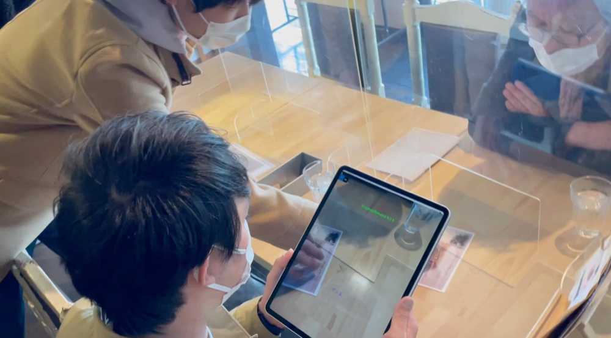
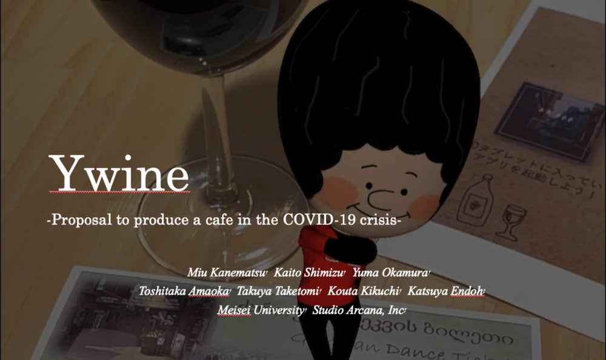
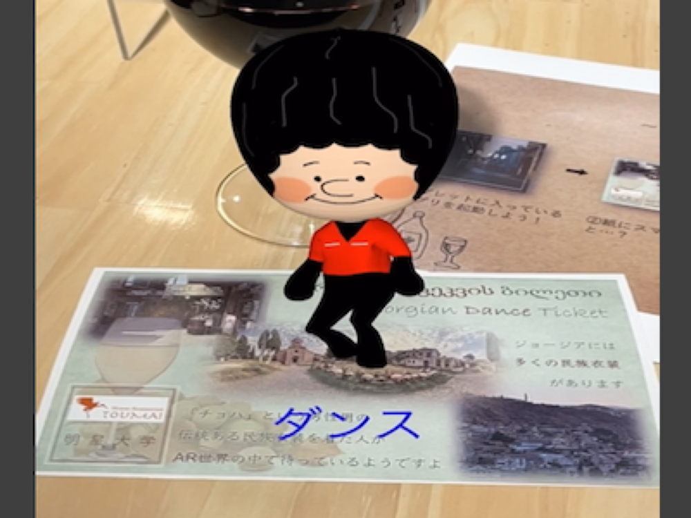

Ywine

Open on YouTubeTechnology
- Xcode (ARkit)
- Blender
- TinkerCAD
Ywine was developed in a year-long third-year university course as a project to promote a cafe whose number of customers had decreased during the COVID-19 pandemic.
The project was developed collaboratively by the School of Informatics and the School of Global Communication. Students were divided into three groups, and my group focused on wine sold at the cafe.
We developed an AR application that lets visitors experience “supra,” a traditional Georgian banquet from the homeland of wine.
The AR experience displayed models such as Chokha-kun, a character wearing Georgian traditional clothing and dancing, as well as traditional instruments, proposing a new kind of wine tasting experience.
The application was used at an actual cafe, where visitors were able to experience it. The name Ywine combines the wish for people to enjoy wine together and the resemblance between the letter Y and a wine glass.

